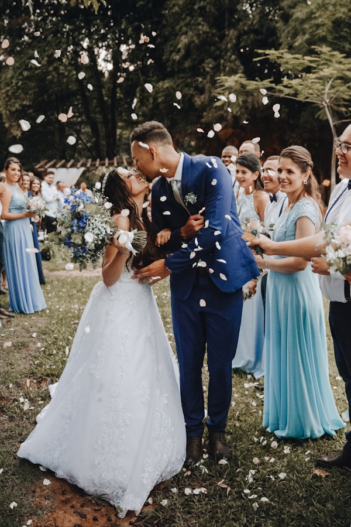
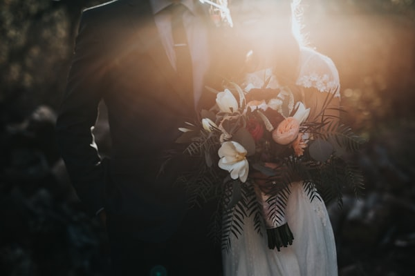
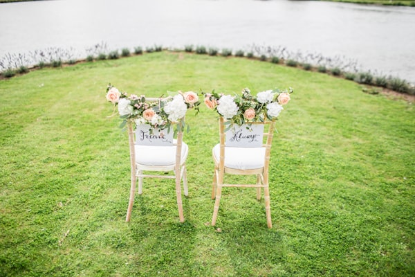
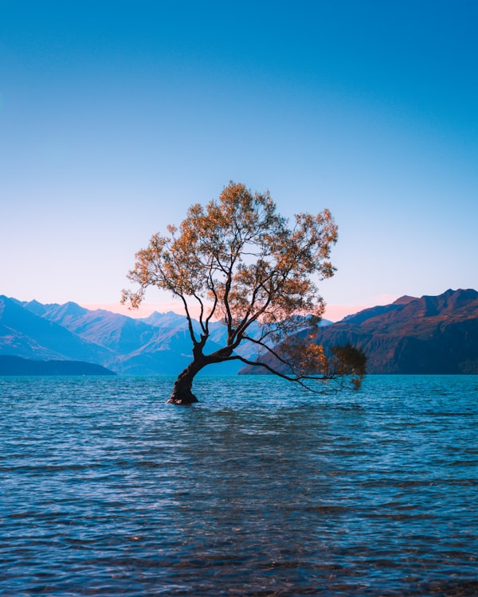
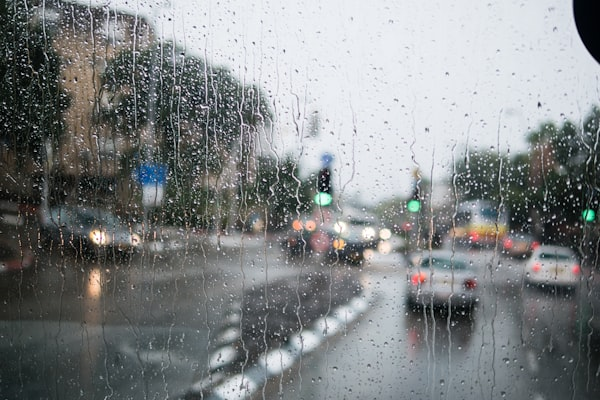
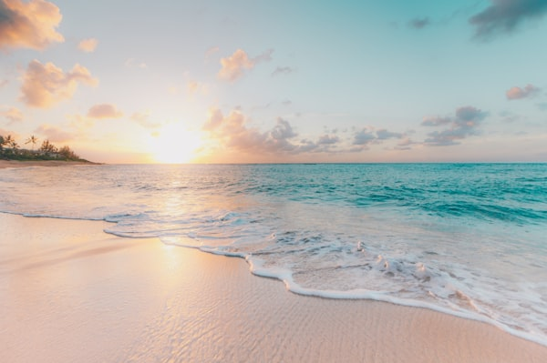

Bodas reales. Familias reales. Halal de verdad.
Una galería curada de momentos de las parejas que ya celebraron con nosotros — y dos historias contadas a detalle.










Dos bodas. Dos continentes. Una promesa.

Un nikah frente al mar, con familia desde tres países.
Aisha es palestina-canadiense; Yusuf, libanés-americano. Querían un punto medio para sus familias y eligieron Cancún. 65 invitados, walima privada en resort, decoración con arcos mihrab y catering halal certificado.
«Lo más mágico fue ver a mis primas de Ramala bailando con la familia mexicana del catering. Eso no se planea — pero sí se permite que pase.»

Tres días — mehndi, nikah y walima — en una hacienda con arcos.
Una boda paquistaní-marroquí en formato 3 días. 130 invitados de 9 países. Mehndi en jardín privado con henna y música andalusí, nikah al amanecer en arco de palma, walima de noche con DJ y producción cinema.
«Tres familias, tres tradiciones, tres días. Y nunca tuvimos que explicar dos veces qué es halal.»